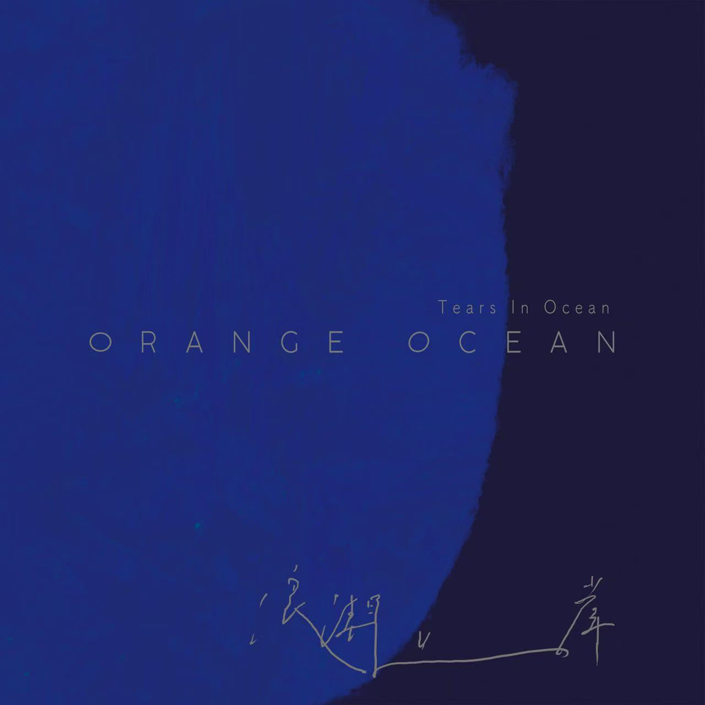
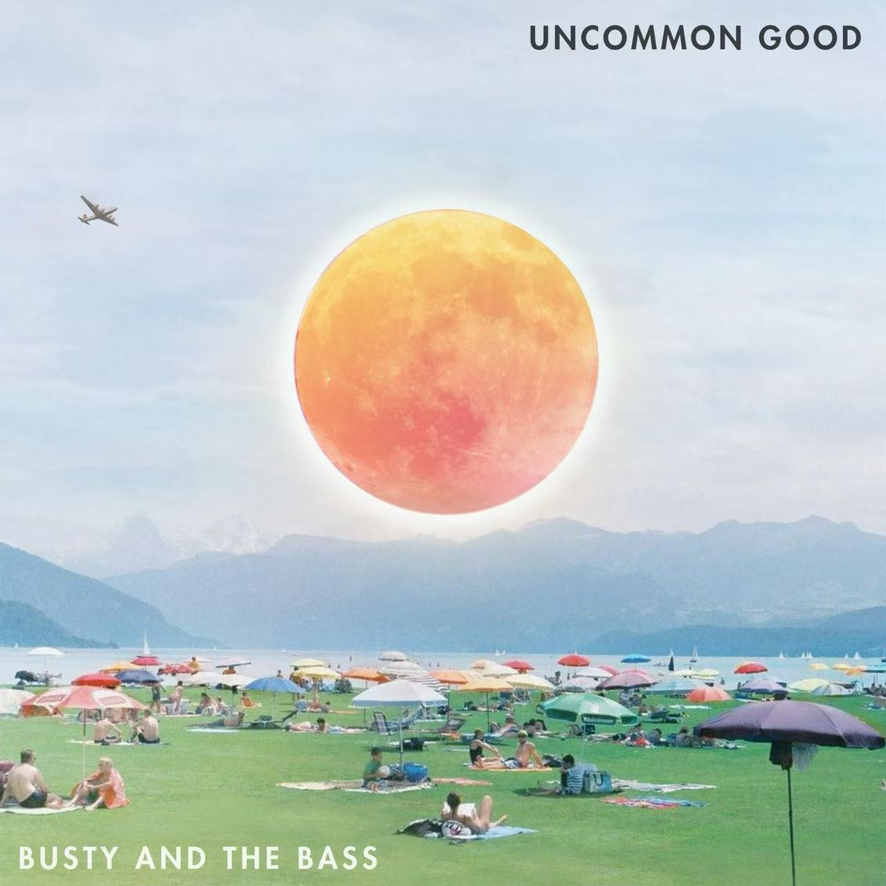
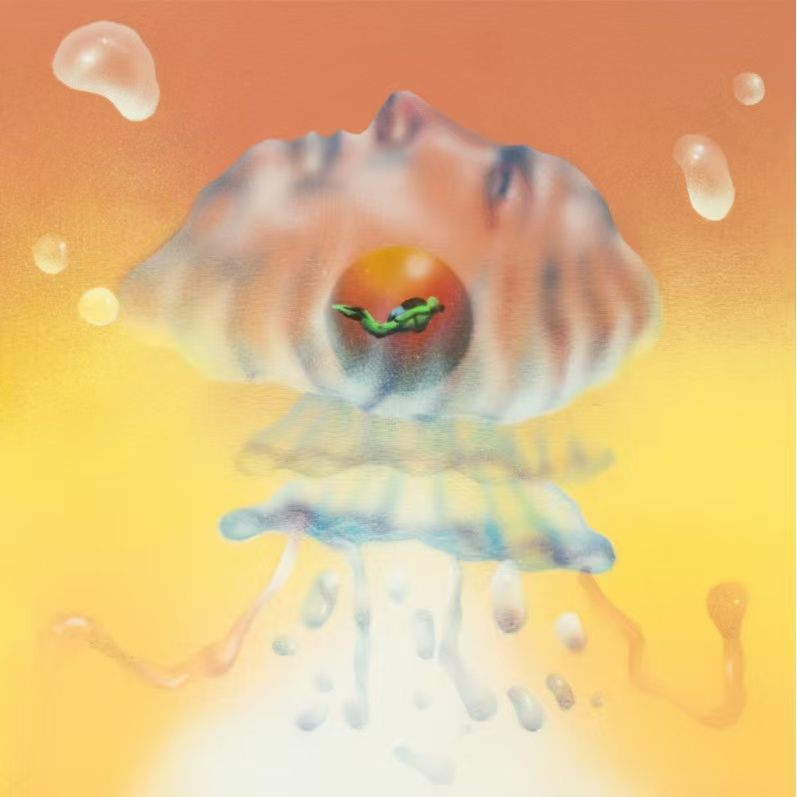

summer's like a long exam. You answer absentmindedly, drifting in thought, until it's too late to finish, and all that's left is a few rushed sentences.
夏日漱石 (summer cozy rock) – 橘子海 (Orange Ocean)

My ultimate summer track, with the best bass line
Things Change – Busty and The Bass

Let time collapse, dont talk about tomorrow.
Kill Bill – SZA
SZA's perfect, and i just love this blue blue ocean
Cherry – FLETCHER / Hayley Kiyoko
Where did that one hour go? after daylight saving time ends?
Unwritten. Unused.
Jellyfish – 落日飞车 (feat. Michael Seyer)

Jellyfish dont have heart. They drift, lost in thought.
They die, dissolve into water, leave no trace, as they were never here.
云中加冕 (The Crown In The Clouds) – 江上青山 JasonYama
"西雅图的雨都下到纽约来了", translation: I'd stand with you where the wind is loud, even if the rain won’t leave us alone.
Mystery of Love – Sufjan Stevens
Secrets melt, or evaporate.
(The film was beautiful, both actors are goodlooking, but one is marrying into the Kardashians, and the other turned out to be a cannibal. Men... )
Long Forgotten Flowers – Pajaro Sunrise
you and I both get trapped in boring thoughts, sometimes.
下个，路口，见 – 李宇春
-What did one wall say to the other wall?
-Meet you at the corner.
WHERE ARE YOU HEADING TO? – Yukihiro Takahashi
Hope quits halfway, sometimes. Not that it matters i have no ties to this world. but you know, theres always somewhere else, so where are you heading to?